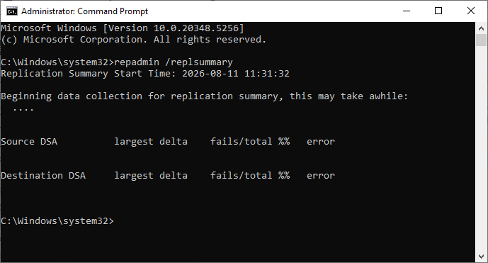

Tutorial – Active Directory Health Check
This check verifies that Active Directory replication is working correctly between all Domain Controllers.
Open Command Prompt and run:
repadmin /replsummary
Verify that:
